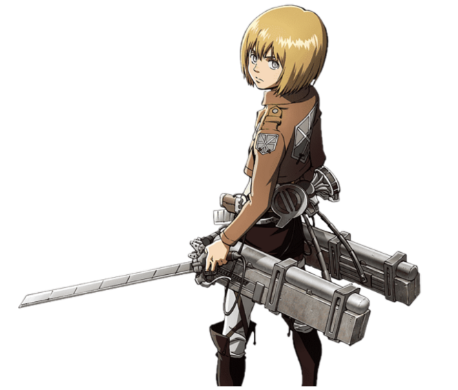

HOME
Witaj na mojej autorskiej stronie! Mam nadzieję, że przeglądając ją od a do z będziesz miał/a ciekawą przygodę w uniwersum Attack on Titan!
FABUŁA
Akcja serii toczy się w postapokaliptycznym świecie, w którym ludzkość została niemal całkowicie wybita przez istoty zwane tytanami. Niewielka część ludzi, która przetrwała, schroniła się na terenie otoczonym trzema 50-metrowymi murami – Maria, Rose i Sina – będącymi dla tytanów przeszkodą nie do pokonania. Mieszkańcy miast od ponad stu lat nie zostali zaatakowani, lecz ich sytuacja nie jest stabilna, gdyż poza murami wciąż żyją liczni tytani, a każda wyprawa oddziału Zwiadowców poza mury kończyła się klęską. Jednak pewnego dnia jak spod ziemi wyrasta Kolosalny Tytan mierzący 60 metrów. Wraz z Opancerzonym Tytanem przebija się przez mur Maria i wpuszcza innych tytanów, którzy całkowicie niszczą wszystkie miasta i pożerają mieszkańców. Ci, którym udało się ewakuować, zamieszkali za murem Rose. Wśród nich jest trójka przyjaciół – Eren, Mikasa i Armin. Eren od dawna marzył o dołączeniu do oddziału Zwiadowców, aby zobaczyć świat zewnętrzny. Widząc jak tytan pożera jego matkę, chłopiec poprzysięga zemstę i kilka lat później wraz z przyjaciółmi zaciąga się do wojska.
POSTACIE

Eren Yeager
Główny protagonista serii Attack on Titan, członek korpusu zwiadowczego. Żył w dystrykcie Shiganshina wraz ze swoimi rodzicami i Mikasą Ackermann, do czasu upadku muru Maria. Wówczas Eren bezradnie przyglądał się, jak jego matka zostaje pożarta przez tytana. To wydarzenie obudziło w nim intensywną nienawiść do tytanów i poprzysiągł wybić ich co do jednego z powierzchni ziemi.
{kind=link}

{kind=link}
Armin Arlert
Deuteragonitsa (poboczony protagonista),przyjaciel z dzieciństwa Erena Yeagera i Mikasy Ackermann oraz jednym z dwojga deuteragonistów serii. Pomimo bycia pozornie najsłabszym fizycznie członkiem 104. korpusu treningowego, jego inteligencja i strategiczny geniusz tworzą z niego bezcenny atut.
Mikasa Ackermann
Deuteragonistka (poboczny protagonista) serii, wraz z Arminem Arleltem. Po tym, jak jej biologiczni rodzice zostali zamordowani przez handlarzy ludźmi, Mikasa została uratowana przez Erena Jaegera i żyła z nim oraz jego rodzicami, Grishą i Carlą Yeager, do czasu upadku muru Maria. Mikasa postanowiła wstąpić do wojska, gdzie została uznana za najlepszego żołnierza 104. korpusu treningowego. Dołącza później korpusu zwiadowczego, aby móc doglądać i chronić Erena, stając się jednym z największych atutów jednostki.
GALERIA